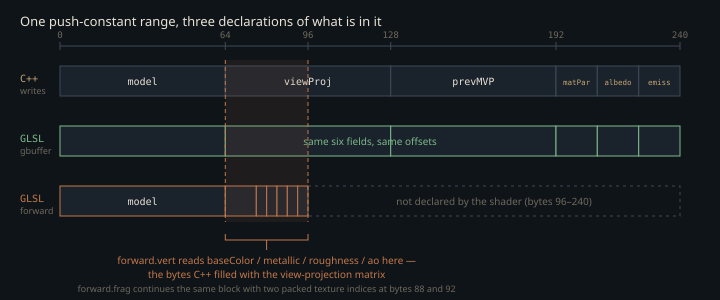

Monograph · Tree · ← Module hub · Layout contracts
gpu
Layout contracts
OHAO_ASSERT_GPU_LAYOUT, MaterialGpuPack, push-constant sizes.
A boundary with no type checker
Between `vkCmdPushConstants` and a GLSL `layout(push_constant)` block there is no type. The driver copies bytes; the shader casts them to whatever its own declaration says they are. Nothing in the Vulkan API, the SPIR-V validator or the C++ compiler compares the two, and a mismatch yields neither a validation error nor a crash — it yields a plausible wrong image. `layout_meta.hpp` converts the one part of that risk that is mechanically checkable, the byte size of the C++ side, into a compile error. Six canonical constants live there. Two are written as the arithmetic the shader ABI implies:
inline constexpr std::size_t kObjectPushConstantsBytes =ohao/gpu/layout_meta.hpp:22The other four are literals — `kGPULightBytes` is `80` with `// 5 * vec4` beside it, `kPTPushConstantsBytes` a bare `256` — so for those the number and its justification can drift apart unwatched. Nor is the header purely declarative: `MaterialGpuPack` adds two constexpr accessors for the three-`vec4` material stride and pins them with static asserts against hand-computed answers, so an edit to `kMaterialVec4s` fails here rather than in a shader.
What the two assertions actually prove
`OHAO_ASSERT_GPU_LAYOUT(Type, Bytes)` expands to a pair of static asserts. The second is the obvious one:
static_assert(sizeof(Type) == (Bytes), \ohao/core/concepts.hpp:87The first requires `GpuPod`, which is `is_trivially_copyable_v` **and** `is_standard_layout_v`. Trivial copyability makes the `memcpy` into mapped device memory defined behaviour instead of a habit. Standard layout is the half people skip, and the one doing structural work: it forbids reordering members declared across different access-control sections, guarantees the first member sits at offset 0, and is the precondition for `offsetof` being defined at all. Without it a struct could satisfy the size check while the field order the shader assumes does not formally exist.
Neither assertion says anything about the other side of the boundary — both are statements about C++ types, evaluated by the C++ compiler, and no build step reflects the SPIR-V. The macro catches *someone added a float to the struct* and is blind to *someone reordered the GLSL block*. Five structs carry it: `ObjectPushConstants` at 240 bytes, `LightData` at 128, `GPULight` at 80, `PTPushConstants` at 256, `MeshBufferInfo` at 16. The last has no GLSL block to reorder: every use is a CPU-side draw range — `vkCmdDrawIndexed` arguments, BLAS geometry offsets — and nothing uploads it. It carries the macro for the trivial-copyability half alone.
The two blocks above the guaranteed floor
Vulkan guarantees only 128 bytes of push-constant space; anything above that is a device capability, not a promise. Two of the five contracts sit above the floor by design — 240 bytes for the raster per-draw block, 256 for the path tracer's — and no code queries `maxPushConstantsSize`; across `ohao/`, `shaders/` and `examples/` the identifier occurs once, inside a comment. On a minimum-spec device the failure surfaces at pipeline-layout creation, not at compile time.
Only one of the two is actually at a ceiling. `ObjectPushConstants` still has 16 bytes of headroom under the 256 the code assumes. The path-tracer block has none: when a per-frame sample count had to reach the raygen shaders there was no room for another field:
// 256-byte device maxPushConstantsSize, so we cannot append a field — theohao/render/rt/path_tracer_render.cpp:692so it was folded into the top half of a lane that already held the bounce limit:
const uint32_t packedBouncesAndSpf = (spf << 16) | (m_maxBounces & 0xFFFFu);ohao/render/rt/path_tracer_render.cpp:696The base and offline raygens mask the high bits off; the realtime raygen loops on them. A size contract that is exactly satisfied has stopped being a check and become a design constraint.
The drift the macro was built for, sitting in the tree
The forward pipeline is where the blind spot shows. `createPipeline()` builds `m_pipeline` out of `core_forward.vert` and `core_forward.frag`:
std::string fragPath = m_shaderBasePath + "core_forward.frag.spv";ohao/gpu/vulkan/pipeline.cpp:182Its layout declares a push range of `sizeof(ObjectPushConstants)`, and `renderSceneObjects()` fills all six fields and pushes all 240 bytes into that layout:
vkCmdPushConstants(cmd, m_pipelineLayout,ohao/gpu/vulkan/scene_upload.cpp:273The two shaders that range feeds declare a 96-byte block agreeing with the C++ struct on exactly one member:
vec3 baseColor;shaders/core/forward.vert:33After `mat4 model` the C++ side has `viewProj`; the shader expects `baseColor`, `metallic`, `roughness`, `ao`. So `pc.baseColor` reads bytes 64–75 — the first column of the view-projection matrix — and multiplies it into the vertex colour. `forward.frag` continues that block with two packed texture indices at bytes 88 and 92, tests them against the missing-texture sentinel, passes for essentially any matrix, and indexes the bindless array with the bit pattern of a float.

Nothing asserts this and nothing has caught it, because no shipped example reaches the forward path. Four of the five route through `resolveMode()`, which returns `Deferred` or the ray-traced mode the CLI parsed, never `Forward`:
if (opts.useDeferred) return RenderMode::Deferred;examples/example_cli.hpp:84`env_demo` skips that helper and pushes its own mode variable, which its argument loop can only set to `RTOffline` or `RTRealtime`. Forward survives as the renderer's default field value and the fallback branch of `render()`:
RenderMode m_renderMode{RenderMode::Forward};ohao/gpu/vulkan/renderer.hpp:526The counter-example the macro never touched
The deferred pass is where packer and shader agree, and the macro had nothing to do with it. `GBufferPass` never touches `ObjectPushConstants`; it declares its own `GBufferUBO`, a field-for-field byte clone, unasserted and unlinked to `layout_meta.hpp`:
}; // 240 bytes — fits in 256-byte push constant limitohao/render/deferred/gbuffer_pass.hpp:121The comment immediately above that struct says "Total: 224 bytes (3 mat4 + 2 vec4)". It is three `mat4`s and three `vec4`s — 240 — and the shader copied the 224:
// Total: 224 bytes (3 mat4 + 2 vec4) — fits within 256-byte NVIDIA limitshaders/core/gbuffer.frag:33A stale byte count propagating from a C++ header into a shader header is precisely what the size assert exists to make impossible, and it is sitting on the one per-draw block in the tree that has no size assert.
What the pass does get right is the packing. C++ packs two floats and two bit-cast texture indices —
ubo.materialParams = glm::vec4(metallic, roughness, packIdx(roughMetalTexIdx), packIdx(albedoTexIdx));ohao/render/deferred/gbuffer_pass.cpp:333— and `gbuffer.frag` pulls each lane out of the position the packer put it in:
uint albedoTexIdx = floatBitsToUint(pc.materialParams.w);shaders/core/gbuffer.frag:60Note the order: metallic in `.x`, roughness in `.y`, the roughness-metallic index in `.z`, the albedo index in `.w`. The path tracer's material row 1 holds `(roughness, metallic, normalTexIdx, emissiveTexIdx)`; its albedo index lives in row 0's `.a` and its roughness-metallic index in row 2's `.x`:
matColors[i * 3 + 1].z = packIdx(i < globalNormalTexLayer.size() ? globalNormalTexLayer[i] : -1); // normalTexIdxohao/gpu/vulkan/rt_build.cpp:807Both are "two floats then two packed indices", both 16 bytes, and all four lanes disagree. Hand-porting one to the other exchanges roughness with metallic *and* hands the normal and emissive maps to the code expecting the roughness-metallic and albedo maps — at full frame rate, every assertion green.
Two sentinel decoders in one shader
Inside `gbuffer.frag` that encoding is decoded two different ways. Albedo and normal compare against the sentinel; roughness-metallic and emissive compare against a magnitude instead:
if (roughMetalTexIdx < 4096u) {shaders/core/gbuffer.frag:1014096 is not arbitrary — it is the bindless array's default capacity:
GpuAllocator* allocator, uint32_t maxTextures = 4096,ohao/gpu/vulkan/bindless_texture_manager.hpp:73The two tests agree on every value the packer produces, so this is not a live bug; it is a hazard in two directions. `< 4096u` rejects the garbage a drifted push block supplies and `!= 0xFFFFFFFFu` does not — which is why both of the forward path's lookups are dangerous: `forward.frag` tests `albedoTexIdx` and `normalTexIdx` — bytes 88 and 92, inside the view-projection matrix — against the sentinel alone, and either one then indexes `textures[]` with a matrix element's bit pattern. And the bound is a literal, so raising `maxTextures` past 4096 hides the high descriptors from two of the four lookups and leaves them visible to the other two.
What `Material` actually delivers
The CPU authoring struct in `material.hpp` carries thirty-one members — index of refraction, transmission, clear coat, subsurface colour and radius, normal intensity, height scale, nine texture paths and the seven `use*` flags gating them, and a thirteen-value preset enum whose `Custom` case is an explicit no-op, leaving twelve presets. Eight of the thirty-one reach a GPU buffer: base colour, roughness and metallic as numbers; four of the nine texture paths — albedo, normal, roughness, emissive — resolved through `BindlessTextureManager` and bit-cast into the same push block by both packers; and `emissive`, collapsed to a boolean, and on the deferred path only inside the emissive-texture branch:
emissiveStrength = glm::length(mat.emissive) > 0.01f ? 1.0f : 0.0f;ohao/render/deferred/gbuffer_pass.cpp:324No pipeline reads `Material`'s `ior`, `transmission`, `clearCoat`, `subsurface`, `normalIntensity` or `heightScale`; the only code that touches them is `material.cpp`'s own presets, so `applyPreset()` on `Type::Glass` sets a transmission of 0.9 that nothing samples. Nothing checks that gap, because there is nothing to check against: `Material` is not a GPU struct and carries no layout assertion.
A material system that was finished and never connected
`material_instance.hpp` holds a second, complete material stack: a 176-byte `PBRMaterialParams` with eight bindless texture indices and a thirteen-flag feature mask, a `MaterialInstance` with clamped setters and dirty tracking, and a `MaterialManager` that allocates a persistently mapped storage buffer for 1024 materials, builds its own descriptor set layout and flushes only the dirty rows. Outside `tests/renderer/renderer_pipeline_tests.cpp` nothing in `ohao/` or `examples/` constructs a `MaterialManager`, and no block in `shaders/` declares a matching layout. Its guard reflects that — not the engine macro but a weaker pair, `GpuPod` plus a modulo:
static_assert(sizeof(PBRMaterialParams) % 16 == 0, "PBRMaterialParams must be 16-byte aligned");ohao/gpu/vulkan/material_instance.hpp:129An alignment check pins the struct to no particular size: any edit adding or removing a multiple of 16 bytes passes. Right strength with no shader on the other end, wrong strength the day one appears.
Sizes are pinned from a constants header rather than derived from the shaders. The alternative — one declaration shared by both sides, either a header the GLSL `#include`s or SPIR-V reflection at pipeline creation — makes *offsets* checkable, not just totals. The toolchain already supports the include half: `shaders/includes/common/types.glsl` declares the 128-byte `Light` struct once, and `forward.frag` and `shadow_depth.vert` pull it in. Nothing else does — `deferred_lighting.frag` includes only `encoding.glsl` and `brdf_ggx.glsl` and re-declares the same struct by hand, so the one shared-declaration mechanism in the tree is already routed around by the pipeline that ships. Its cost is that every C++ struct becomes downstream of shader preprocessing and layout questions become runtime failures. OHAO took the cheap half — one place to edit a size, review for everything else. The forward push block is the bill for the half it skipped.
`OHAO_ASSERT_GPU_LAYOUT` proves two things about a C++ type: that it can be memcpy'd, and that it is N bytes. It cannot see the GLSL that reads those bytes, so every defect that leaves the total unchanged — a reordered field, a lane that changed meaning, a shader block written against an older struct — passes it.
Contracts
- `PTPushConstants` sits exactly at the 256-byte limit the code assumes, so no field can be appended. `params.w` carries `samplesPerFrame` in its high 16 bits and `maxBounces` in its low 16; the realtime raygen unpacks the high half, base and offline mask it off.
- Nothing queries `maxPushConstantsSize`, and two of the five asserted structs exceed Vulkan's guaranteed 128 bytes. On a minimum-spec device the failure is a rejected pipeline layout, not a failed build.
- `core/forward.vert` and `core/forward.frag` declare a 96-byte push block that disagrees with `ObjectPushConstants` after byte 64. No shipped example selects `RenderMode::Forward` today; re-enabling it without rewriting the block reads matrix entries as material parameters and a float's bit pattern as a bindless texture index.
- `GBufferPass::GBufferUBO` is a byte clone of `ObjectPushConstants` with no `OHAO_ASSERT_GPU_LAYOUT` and no link to `layout_meta.hpp`. Its own header comment says both 224 and 240 bytes, and `gbuffer.frag` copied the 224. Editing either struct leaves the other silent.
- The deferred per-draw block orders lanes `(metallic, roughness, roughMetalTexIdx, albedoTexIdx)`; the path tracer's material row 1 orders them `(roughness, metallic, normalTexIdx, emissiveTexIdx)`. All four lanes differ, and neither ordering is asserted against its shader.
- `gbuffer.frag` decodes one sentinel two ways — `!= 0xFFFFFFFFu` for albedo and normal, `< 4096u` for roughness-metallic and emissive. That literal must track `BindlessTextureManager`'s `maxTextures` by hand.
- `PBRMaterialParams` is guarded only by `sizeof % 16 == 0`. If a shader ever binds it, replace that with an exact-byte `OHAO_ASSERT_GPU_LAYOUT` first.
Source files
ohao/gpu/layout_meta.hppohao/core/concepts.hppohao/render/rt/path_tracer_render.cppohao/gpu/vulkan/pipeline.cppohao/gpu/vulkan/scene_upload.cppshaders/core/forward.vertexamples/example_cli.hppohao/gpu/vulkan/renderer.hppohao/render/deferred/gbuffer_pass.hppshaders/core/gbuffer.fragohao/render/deferred/gbuffer_pass.cppohao/gpu/vulkan/rt_build.cppohao/gpu/vulkan/bindless_texture_manager.hppohao/gpu/vulkan/material_instance.hppohao/gpu/vulkan/material.hppohao/gpu/vulkan/material.cppohao/gpu/vulkan/material_instance.cppParent hub for the full pipeline narrative; this page is the file-level design unit. Sitemap · hover glossary terms anywhere.